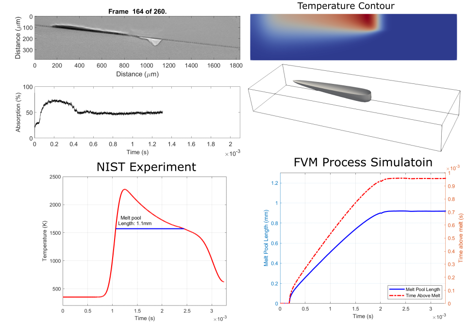
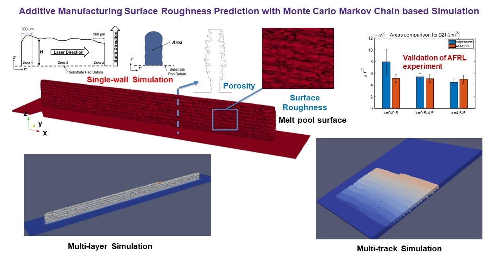

Projects
Physics Guided Computational Model for Accelerated Additive Manufacturing Simulation

A Finite Volume Method (FVM) based Additive Manufacturing Computational Fluid Dynamics code (AM-CFD) is equipped with a physics-based cylindrical heat source that has the capability to accurately predict AM experiments. The choice of physics-based cylindrical heat source as opposed to heuristic heat source calibration relates volumetric energy density (ψ) with key parameters for simulations. Among those parameters that relate the heat source with melt pool geometry is capable of predicting several measurement metrics such as solid cooling rate, liquid cooling rate, melt pool depth, melt pool width, and time above melting. These experimental measurement metrics are defined by the National Institute for Standards and Technology (NIST) on their developed additive manufacturing metrology testbed (AMMT). The prediction using the calibrated heat source quantitatively agrees with NIST measurements for different process conditions. It is found that the appropriate selection of parameterization scheme along with the heat source model plays a crucial role in the accurate prediction of melt pool geometry and thermal measurements while a computational acceleration of ~100 times are obtained.
Stochastic Digital Twin Model for Metal Laser Powder Bed Fusion Process

A digital twin (DT) is a virtual representation of physical process, products and/or systems that requires a high-fidelity computational model for continuous update through the integration of sensor data and user input. In the context of laser powder bed fusion (LPBF) additive manufacturing, a digital twin of the manufacturing process can offer predictions for the produced parts, diagnostics for manufacturing defects, as well as control capabilities. This paper introduces a parameterized physics based digital twin (PPB-DT) for the statistical predictions of LPBF metal additive manufacturing process. We accomplish this by creating a high-fidelity computational model that accurately represents the melt pool phenomena and subsequently calibrating and validating it through controlled experiments. In PPB-DT, a mechanistic reduced-order method-driven stochastic calibration process is introduced, which enables the statistical predictions of the melt pool geometries and the identification of defects such as lack-of-fusion porosity and surface roughness, specifically for diagnostic applications. Leveraging data derived from this physics-based model and experiments, we have trained a machine learning-based digital twin (PPB-ML-DT) model for predicting, monitoring, and controlling melt pool geometries. These proposed digital twin models can be employed for predictions, control, optimization, and quality assurance within the LPBF process, ultimately expediting product development and certification in LPBF-based metal additive manufacturing.